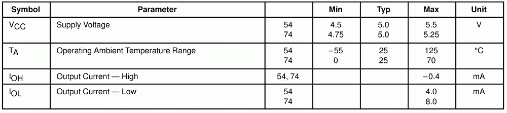
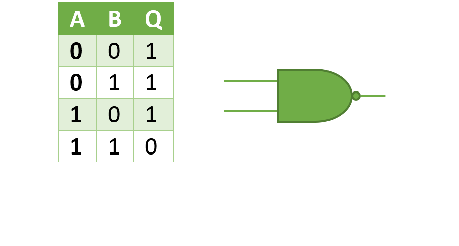
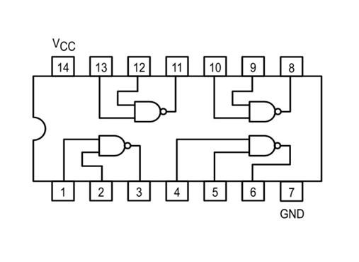
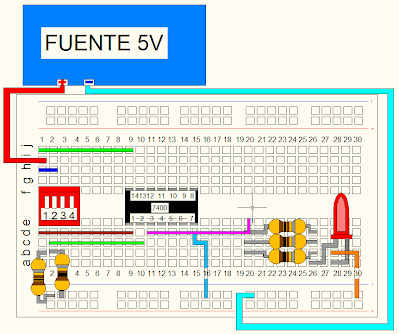

Caracteristicas:
Circuito integrado TTL 74LS00 que consta de cuatro compuertas NAND de dos entradas independientes.
Valores normales de funcionamiento de la compuerta

Tabla de verdad y simbolo
Operacion:Q= (A.B)

Diagrama interno:
Diagrama interno de las patas y las entradas de la compuerta

Ejemplo practico de su uso:
MATERIALES:
Una compuerta 74ls04, dos resistencias de 1/4 watt de 330 ohmios(R1-R2) , una resistencia de 1/4 watt de 220 ohmios(R3),tres led de color diferente ,un dip-switch doble, un protoboard.

Al conmutar el disp-switch tomando en cuenta que cada uno representa una de las dos entradadas a una de las compuertas del IC podemos comporobar que la tabla de verdad se cumple siendo el led la salida de esta compurta ,lo mismo aplica con las otras compuertas.